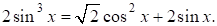
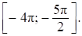

Дайте развернутый ответ.
а) Решите уравнение

б) Укажите корни этого уравнения, принадлежащие отрезку 

КЭС: 2.3 Тригонометрические уравнения; 2.5 Целые и дробно-рациональные неравенства
Тип ответа: Развернутый ответ
Источник ФИПИ